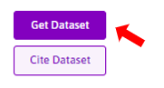
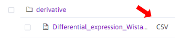
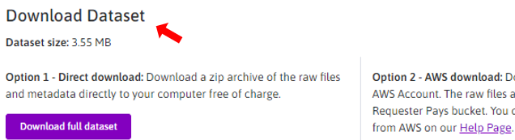
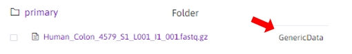

Download Transcriptomics data from SPARC Portal
The SPARC portal databse include multipl transcriptomics datasets.
To search for a datset, first apply the filter"Transcriptomics".

Once you foun and interesting dataset, click on the "Get Dataset" button.

Some datasets privde processed data. So first search for csv files in the the "derivative" folder.

The csv files include processed data, so you can directly visualize the data.
Or, You can download the raw data, directly in your computer or with AWS.

If you do not want to download the data for all the samples, you will need to search for the fastq files of the samples of interest in the "primary" folder.

Here is a pipeline suggestion to process and analyze raw data.